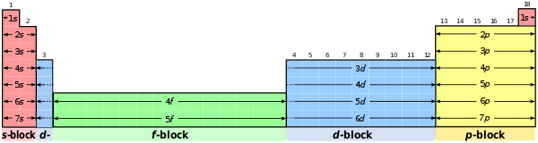

ATOMUN KUANTUM MODELİ | Salı, Aralık 29, 2020 |



1.1.4 Çok Elektronlu Atomlarda Orbitallerin Enerji Seviyeleri
Elektronların çekirdek etrafında bulunma olasılığının en yüksek olduğu bölgeye orbital denir. Açısal momentum kuantum sayısına (l) bağlı olarak s, p, d ve f orbitalleri olmak üzere 4 çeşit orbital vardır.
Orbital İsimleri; | |
A) s Orbitali: | Küre şeklindedirler. Çekirdekten uzaklaştıkça yoğunluğu azalır. Baş kuantum sayısının değeri büyüdükçe s orbitallerinin enerjisi artar. s orbitalleri en fazla iki elektron bulundurabilirler. |
B) p Orbitali | p orbitalleri çekirdeğin iki tarafında zıt olarak yerleşmişlerdir. Kum torbasına benzeyen p orbitalleri üç orbitalden oluşur ve bu üç orbitalin enerjileri birbirine eşittir (px, py ve pz orbitalleri). En çok 6 elektron alır. İkincil kuantum sayısı l’nin 1 değerine karşılık gelir. Bir p orbitali hiç bir zaman çekirdekte bulunmaz, ikinci ve daha üst enerji seviyelerinde bulunmaktadır. |
C) d Orbitali | Üçüncü ve daha üst enerji seviyelerinde bulunurlar. Dış manyetik alan yokken aynı enerji seviyesinde 5 tane ayrı d orbitali bulunur. En çok 10 elektron alır. l’nin 2 değerine karşılık gelir. s ve p orbitallerine göre daha karmaşık bir yapısı vardır. İlgili Resim Linki: R.1.5 |
D) f Orbitali | Dördüncü veya daha üst enerji düzeylerinde bulunur. 7 orbitalden oluşur ve en çok 14 elektron alır. İkincil kuantum sayısı l’nin 3 değerine karşılık gelir. |
Çok elektonlu atomlarda orbitallerin Enerji düzeyleri; Kaynakça: "Kaynak" Yazısına Tıklayınız Lütfen |